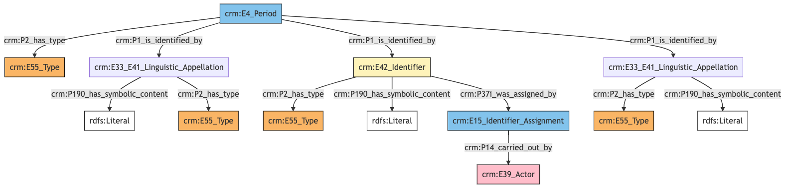
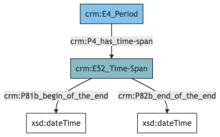

Period
Author: Denitsa Nenova, George Bruseker
Version: 1.0
The Period model is intended to enable the documentation and correct referencing of historical periods for use in datation. Typical instances of Period include period divisions of major epochs including well-known historical periods. Period is used primarily as a reference model.
| Name | URI | |
|---|---|---|
| Root Ontology Node | E4 Period | https://cidoc-crm.org/Entity/E4-Period/version-7.1.1 |
| Type Differentiator | N/A | N/A |
| Information Category | Information Collections | Description |
|---|---|---|
| Names and Classifications | Names/Alternative Names/Identifiers/Type | The researcher can document various names and classification regarding the Period. |
| Existence | Existence | The researcher can document various free text descriptions of the Period. |
Period Names and Classifications
The attribution of names and types to a historical period.
| Filed ID | Name | Description | Data Type | CRM Path |
|---|---|---|---|---|
| fie_1 | Period Identifier | This field is used to record an identifier attributed to the documented Period. | String | --> P1 --> E42[1_1] --> P190 --> rdfs:Literal |
| fie_2 | Period Identifier Type | This field is used to record the type of the identifier attributed to the documented Period. | Concept | --> P1 --> E42[1_1] --> P2 --> E55[2_1] |
| fie_3 | Period Identifier Provider | This field is used to record the institution, group or individual responsible for providing the documented Period's identifier. | Reference Model [Person/Group] | --> P1 --> E42[1_1] --> P37i --> E15[3_1] --> P14 --> E39[3_2] |
| fie_5 | Period Name | This field is used to record the main name attributed to the documented Period. | String | --> P1 --> E33_E41[5_1] --> P190 --> rdfs:Literal --> P1 --> E33_E41[5_1] --> P2 --> E55[5_2]{'preferred terms'} |
| fie_10 | Period Alias | This field is used to record an alternative name under which the documented Period is known. | String | --> P1 --> E33_E41[10_1] --> P190 --> rdfs:Literal |
| fie_11 | Period Alias Type | This field is used to record the type of the alternative name that has been attributed to the documented Period. | Concept | --> P1 --> E33_E41[10_1] --> P2 --> E55[11_1] |
| fie_17 | Period Type | This field is used to record the formal type of the documented Period. | Concept | --> P2 --> E55[17_1] |
- Period Names and Classifications Ontology Graph

- Period Names and Classifications RDF
@prefix crm: <http://www.cidoc-crm.org/cidoc-crm/> .
@prefix rdfs: <http://www.w3.org/2000/01/rdf-schema#> .
<https://census.de/example/event/E4> a crm:E4_Period ;
crm:P1_is_identified_by <https://example.org/name/fie_10_1>,
<https://example.org/name/fie_1_1>,
<https://example.org/name/fie_5_1> ;
crm:P2_has_type <https://example.org/type/fie_17_1> .
<http://vocab.getty.edu/aat/300404670> a crm:E55_Type ;
rdfs:label "preferred terms" .
<https://example.org/actor/fie_3_2> a crm:E39_Actor .
<https://example.org/event/fie_3_1> a crm:E15_Identifier_Assignment ;
crm:P14_carried_out_by <https://example.org/actor/fie_3_2> .
<https://example.org/name/fie_10_1> a crm:E33_E41_Linguistic_Appellation ;
crm:P190_has_symbolic_content "content" ;
crm:P2_has_type <https://example.org/type/fie_11_1> .
<https://example.org/name/fie_1_1> a crm:E42_Identifier ;
crm:P190_has_symbolic_content "content" ;
crm:P2_has_type <https://example.org/type/fie_2_1> ;
crm:P37i_was_assigned_by <https://example.org/event/fie_3_1> .
<https://example.org/name/fie_5_1> a crm:E33_E41_Linguistic_Appellation ;
crm:P190_has_symbolic_content "content" ;
crm:P2_has_type <http://vocab.getty.edu/aat/300404670> .
<https://example.org/type/fie_11_1> a crm:E55_Type .
<https://example.org/type/fie_17_1> a crm:E55_Type .
<https://example.org/type/fie_2_1> a crm:E55_Type .
- Period Names and Classifications JSON-LD
{
"@context": "https://linked.art/ns/v1/linked-art.json",
"@graph": [
{
"classified_as": [
"https://example.org/type/fie_17_1"
],
"id": "https://census.de/example/event/E4",
"identified_by": [
"https://example.org/name/fie_10_1",
"https://example.org/name/fie_5_1",
"https://example.org/name/fie_1_1"
],
"type": "Period"
},
{
"classified_as": [
"https://example.org/type/fie_2_1"
],
"content": "content",
"id": "https://example.org/name/fie_1_1",
"identifier_assigned_by": [
"https://example.org/event/fie_3_1"
],
"type": "Identifier"
},
{
"id": "https://example.org/type/fie_17_1",
"type": "Type"
},
{
"classified_as": [
"http://vocab.getty.edu/aat/300404670"
],
"content": "content",
"id": "https://example.org/name/fie_5_1",
"type": "Name"
},
{
"id": "https://example.org/type/fie_2_1",
"type": "Type"
},
{
"id": "https://example.org/type/fie_11_1",
"type": "Type"
},
{
"_label": "preferred terms",
"id": "http://vocab.getty.edu/aat/300404670",
"type": "Type"
},
{
"classified_as": [
"https://example.org/type/fie_11_1"
],
"content": "content",
"id": "https://example.org/name/fie_10_1",
"type": "Name"
},
{
"id": "https://example.org/actor/fie_3_2",
"type": "Actor"
},
{
"carried_out_by": [
"https://example.org/actor/fie_3_2"
],
"id": "https://example.org/event/fie_3_1",
"type": "IdentifierAssignment"
}
]
}
Period Existence
The assigned timespan of a historical period.
| Filed ID | Name | Description | Data Type | CRM Path |
|---|---|---|---|---|
| fie_50 | Period Earliest Possible Date | This field is used to record the earliest possible end date for the documented Period. | Date | --> P4 --> E52[48_1] --> P81b --> xsd:dateTime |
| fie_51 | Period Latest Possible Date | This field is used to record the latest possible end date for the documented Period. | Date | --> P4 --> E52[48_1] --> P82b --> xsd:dateTime |
- Period Existence Ontology Graph

- Period Existence RDF
@prefix crm: <http://www.cidoc-crm.org/cidoc-crm/> .
@prefix xsd: <http://www.w3.org/2001/XMLSchema#> .
<https://census.de/example/event/E4> a crm:E4_Period ;
crm:P4_has_time-span <https://example.org/time_span/fie_48_1> .
<https://example.org/time_span/fie_48_1> a crm:E52_Time-Span ;
crm:P81b_begin_of_the_end ""^^xsd:dateTime ;
crm:P82b_end_of_the_end ""^^xsd:dateTime .
- Period Existence JSON-LD
{
"@context": "https://linked.art/ns/v1/linked-art.json",
"@graph": [
{
"id": "https://census.de/example/event/E4",
"timespan": "https://example.org/time_span/fie_48_1",
"type": "Period"
},
{
"begin_of_the_end": "",
"end_of_the_end": "",
"id": "https://example.org/time_span/fie_48_1",
"type": "TimeSpan"
}
]
}